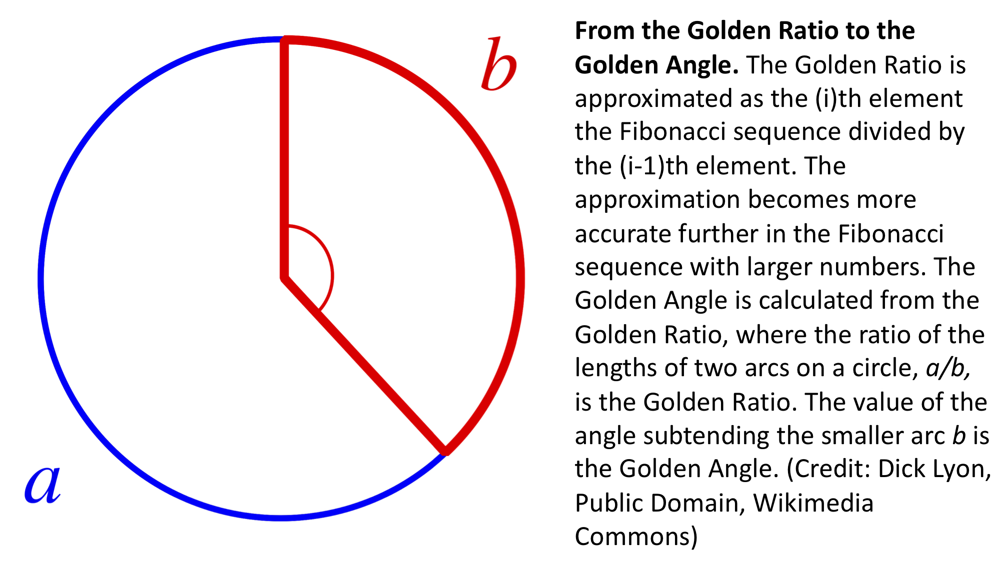

Lección 3.6¶
Práctica con La raz√≥n dorada calculada con loops ü媬∂
De la sucesión de Fibonacci a la razón dorada¶
Después de ver el video de arriba, en la celda de abajo, crea un loop for que calcule los primeros 100 números de la sucesión de Fibonacci.
Haz lo siguiente:
Crea una lista fuera del loop
forpara guardar la sucesión. Llamemosfibonaccia la lista.Recuerda que debemos especificar los dos primeros números de la sucesión (0 y 1) en la lista para calcular los términos subsiguientes.
Debemos comenzar a iterar en el tercer elemento (índice = 2) de la lista para calcular el resto de la sucesión.
Cada elemento de la sucesión es la suma de los elementos
i-2ei-1.
# Escribe tu respuesta aquí
En la celda de abajo, calcula la longitud de la lista fibonacci con la función len () (deberíamos tener 100 elementos. De lo contrario, modifica el loop para asegurar que este sea el caso).
# Determina la longitud de la lista Fibonacci:
Una vez que conseguimos calcular la sucesión de Fibonacci, ¡modifiquemos el código para calcular la razón dorada \(\phi\)!
La razón dorada se aproxima como la razón del elemento i dividido por el elemento i-1 de la sucesión de Fibonacci. La aproximación de la razón dorada i/(i-1) se vuelve más precisa cuando evaluamos índice grandes. ¡Usemos nuestras habilidades de loops para aproximar la razón dorada!
Copia y pega el código de la sucesión de Fibonacci de arriba. En la celda a continuación, modifícalo para hacer lo siguiente:
Además de la lista de Fibonacci (rellenada previamente con 0 y 1 para calcular la secuencia) agreguemos otra lista vacía llamada
phifuera del loop para almacenar nuestras aproximaciones de la razón dorada.Esta vez, calculemos solo 52 elementos de la sucesión de Fibonacci y 50 elementos de \(\varphi\).
Todavía debemos comenzar en el tercer elemento (índice = 2) para calcular la sucesión de Fibonacci, por lo que debemos agregar dos iteraciones adicionales para asegurarse de obtener las 50 aproximaciones de \(\varphi\) (porque a diferencia de la sucesión de Fibonacci, esta lista
phicomienza vacía).
En el loop
for, calculamos cada elemento de la sucesión de Fibonacci como la suma de los elementos(i-2)+(i-1)y los añadimos a la lista de Fibonacci.Agregamos dentro del
forun cálculo de \(\phi\) como elementosi/(i-1)de la secuencia de Fibonacci.Importante: para poder calcular \(\varphi\) como se describe arriba, ¡el
i-ésimo elemento de tu lista de Fibonacci no existe hasta que lo calcules! Asegúrate de calcular el próximo número de Fibonacci de la serie y agregarlo a la lista antes de calcular \(\varphi\). Fibonacci primero, luego \(\varphi\).
# Tu respuesta aquí
En la siguiente celda, con print imprime:
La longitud
len()de la listaphiImprime
phi. La lista debe de aproximar el valor de la razón dorada: 1.618033988749895
# Tu respuesta aquí
De la razón dorada al ángulo dorado¶
La hermosa filotaxia en espiral de los girasoles y en órganos laterales de otras plantas surge del ángulo dorado. El ángulo dorado se deriva de la razón dorada. Si dos arcos en un círculo se definen de manera que la longitud del arco a dividido por el arco b es la razón dorada, entonces el ángulo resultante es el ángulo dorado.
Como acabamos de ver, la raz√≥n dorada es producto de la sucesi√≥n de Fibonacci, ¡y as√≠ es como los patrones inspiradores que se ven en un disco de girasol están vinculados a la sucesi√≥n de Fibonacci! üåª

Aproximemos el ángulo dorado a partir de la razón dorada.
Primero, obtengamos nuestra estimación más precisa de la razón dorada.
En la próxima lección, usaremos la función .pop(), la cual se puede agregar al final de una lista. .pop() devolverá el último elemento de la lista. Como el último miembro de nuestra lista phi es la mejor aproximación de la razón dorada que tenemos, ¡usemos .pop() para obtener ese valor! La forma en que se usa .pop() es la siguiente:
my_variable = my_list.pop()
En la celda de abajo, crea una nueva variable llamada golden_ratio usando .pop() para aislar el último valor de la lista phi. Imprime el valor de golden_ratio.
# Tu respuésta aquí
La razón dorada tiene algunas propiedades muy interesantes.
En la celda de abajo, haz print() de lo siguiente usando tu nueva variable golden_ratio:
Imprime el valor de
golden_ratioImprime el valor de
golden_ratioelevado al cuadradoImprime el valor de
1/golden_ratio
¿Qué observas que es similar entre todos los valores que acabas de calcular?
# Respuesta aquí
No solo todos los valores que acabamos de calcular terminan con los mismos decimales, sino que también observamos que golden_ratio**2 = 1 + golden_ratio. Con esta información, ¡descubramos cómo derivar el ángulo dorado a partir de la razón dorada!
Sea f la fracción de la longitud de la circunferencia de un círculo que está ocupada por el arco b, donde la razón de las longitudes de los arcos a/b es la razón dorada.
golden_ratio = a/b
f = b / (a + b)
f = (b/b) / ( (a/b) + (b/b) )
f = 1 / (golden_ratio + 1)
f = 1 / golden_ratio**2
De los cálculos anteriores, podemos ver que la fracción de la circunferencia del círculo ocupado por el arco b que está subtendido por el ángulo dorado es 1/golden_ratio**2.
En la celda a continuación, calculemos el ángulo dorado a partir de la aproximación de la razón dorada en grados como:
golden_angle = 360*(1/golden_ratio**2)
Nuestra respuesta debe estar cerca de “137.50776405003785”.
# Respuesta aquí
¡Felicidades! ¡Calculamos el ángulo dorado desde cero usando python! Utilizaremos el ángulo dorado en la siguiente actividad para modelar el crecimiento de un girasol.